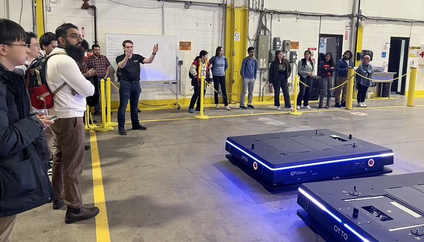
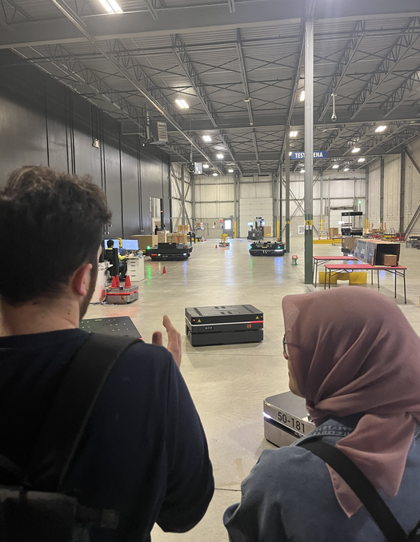

Robotics Outreach Tour
The Robotics Outreach Tour (ROT) is an initiative led by graduate students from the University of Toronto Mississauga (MCS departmant) to foster stronger connections between academic research and the robotics industry. Through structured visits to robotics companies, innovation hubs, and research testbeds, ROT provides students with firsthand exposure to industrial workflows, facilitates technical exchange, and creates opportunities for collaboration and career development. The tour aims to bridge the gap between theoretical research and real-world deployment by encouraging dialogue around current challenges, practical constraints, and future directions in robotics.
Contact
If you have any questions, kindly email the current organizers:
Winter 2025
From Equations on Whiteboards to Robot Fleets in Warehouses
We believe that robotics lives at the intersection of stepping-stone innovations and practical applications. Therefore, we went out of the lab and took a bus to the factories and testbeds shaping Canada’s automation future. In our first tour, we strengthened ties between graduate students, post-docs, and industrial leaders by visiting University of Waterloo’s RoboHub and Clearpath Robotics by Rockwell Automation. Like our teaching lab in UTM, RoboHub is a point of contact for students and faculties interested in hands-on experiences with robots. Clearpath Robotics is famous for the yellow autonomous mobile robot platforms used in our labs and other labs around the world. Both are ideal candidates for the first installation of our “Robotics Outreach Tour.”
RoboHub, located at the heart of University of Waterloo’s Faculty of Engineering, gave us a warm welcome by having engineers and students present a comprehensive walkthrough of their robots and ongoing research themes. This facility brings together a 5G-enabled infrastructure and a diverse fleet of over 30 robots that ranges from humanoids and quadrupeds to indoor drones and maglev platforms, open to all members of the university. Our engagement started with graduate students sharing their work in robot vision, reinforcement learning, manipulation. This was followed by a visit to the student design center where groups of undergraduate engineering students work towards robotic competitions. The fun engagement with students led us to discussing plans to host them next time at UTM and visit our robotics facilities during the Toronto Robotics Conference. Being in close contact with Dr. Brandon J. DeHart (RoboHub Manager), we hope to continue the fruitful conversation at this event, which will take place on July 15 and 16, 2025 at our scenic UTM campus in Mississauga.
At UTM, Clearpath Robotics' influence is evident through our lab's use of multiple Franka Emika manipulators and several mobile robots such as the dual arm Warthog robot. This visit offered a unique opportunity to connect with the company behind some of the tools we use in our research. For that, we decided to hold mutual presentations. James Servos (Director, Mobile robot technology) gave us a deep dive into Clearpath’s evolution—from early research prototypes to OTTO Motors’ industrial autonomous mobile robots deployed across warehouses and production facilities globally. The presentation covered product development cycles, integration with legacy systems, and the high-stakes world of 24/7 fleet operation. We then had the chance to share our work on reinforcement learning for surgical robotics, designing and prototyping for continuum robots, and the mobile robotic research for crowd navigation, as well as a brief overview of chemistry lab automations. On top of that, Clearpath robotics provided a truly eye-opening tour including an assembly facility walkthrough and OTTO Motors demos that shows a fleet of robots autonomously navigating, dynamically coordinating their paths, and real-time reacting in a warehouse-like environment.
We believe the idea behind our Robotics Outreach Tour can be a foundation for a stronger, more connected Canadian robotics ecosystem. To expose students to industrial workflows, spark meaningful conversations, and support student’s career explorations, we are already planning the next tour—stay tuned! And if you are a robotics company, innovation hub, or research testbed in Canada interested in showcasing your work—we love to connect, one bus ride at a time.
Robotics Outreach Tour